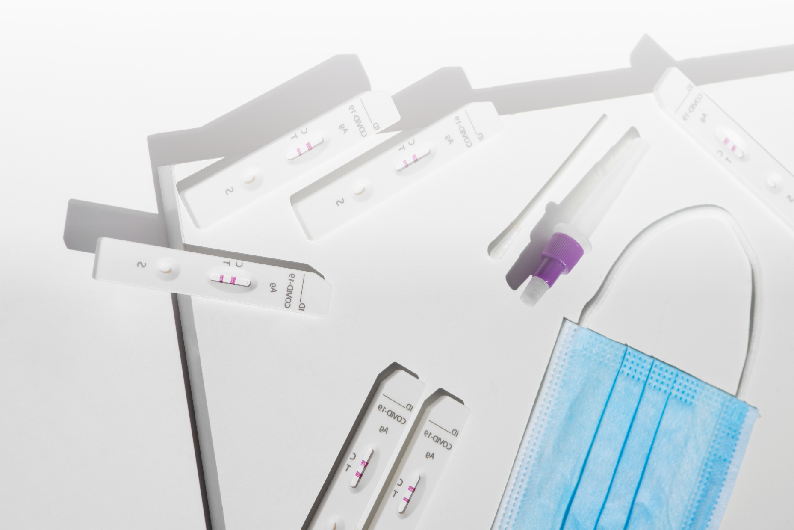

Biosafety Level
Classification of laboratory safety practices based on the risk of infection.
Buffer
Solution used to maintain a stable pH during the test.
Calibration
Process of adjusting a test to ensure its accuracy.
Capillary Action
Movement of liquid through a porous material due to surface tension.
Cassette
Device housing the test components, usually used for lateral flow assays.
CE Marking
Certification indicating that a product meets European safety, health, and environmental requirements.
Chromatographic Separation
Process of separating substances in a sample based on their movement through a medium.
Clinical Interference
Factors in the clinical environment that impact test results.
Clinical Sample
Biological material collected from a patient for testing.
Colloidal Gold
Gold particles used in tests to visualize the reaction, often for colorimetric tests.
Compliance Labeling
Labels indicating adherence to regulatory standards.
Conjugate Pad
Contains labeled antibodies or antigens that react with the sample.
Control Line
Line on a test indicatung the test has been performed correctly.
Cross-reactivity
When a test reacts with substances other than the target, causing false results.
Cutoff Threshold
Value used to separate positive from negative results in a test.
Cut-off Value
Threshold level that distinguishes positive from negative test results.
Desiccant
Substance used to keep the test dry and free from moisture.
Diagnostic Accuracy
Measure of how well a test correctly identified or excludes a condition.
Diagnostic Sensitivity
Percentage of correctly identified positive cases in a diagnostic test.
Diagnostic Specificity
Percentage of correct identifies negative cases in a diagnostic test.
Diluent
Solution used to dilute a sample or reagent.
